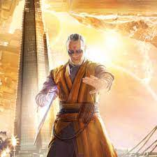

Kaecilius
Kaecilius was one of the most powerful members of the Masters of the Mystic Arts, possessing a extraordinary mastery of the mystic
arts and with the help of numerous mystical artifacts and relics, in addition to his astral powers, Kaecilius is able to gain access
to a multitude of mystical powers. His overall skill in magic proved to be great enough to hold his own against his mentor the
Ancient One.
The direction to find Kaecilius
- Find the location to the place called Copenhagen
- Enter in to the building of the denmark
